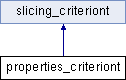

Inheritance diagram for properties_criteriont:

Public Member Functions | |
| properties_criteriont (const std::list< std::string > &properties) | |
| virtual bool | operator() (goto_programt::const_targett target) |
 Public Member Functions inherited from slicing_criteriont Public Member Functions inherited from slicing_criteriont | |
| virtual | ~slicing_criteriont () |
Protected Attributes | |
| const std::list< std::string > & | property_ids |
The documentation for this class was generated from the following file:
- src/goto-instrument/full_slicer_class.h